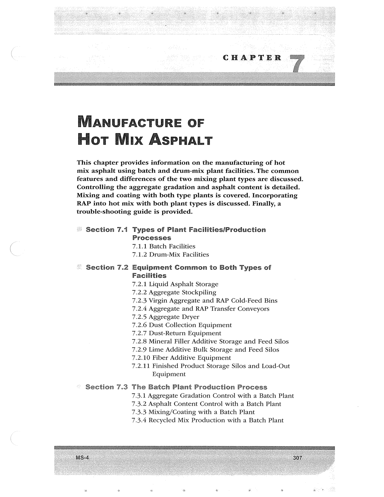

PDF page 341 · book page sequence 307


Searchable transcription
Unproofread OCR · 190 detected words; mean OCR confidence 94.05. Check technical values, symbols and table columns against the scan.
CHAPTER
IVIANUFACTURE OF Fiot Mix ASPHALT
This chapter provides information on the manufacturing of hot
mix asphalt using batch and drum-mix plant facilities. The common features and differences of the two mixing plant types are discussed. Controlling the aggregate gradation and asphalt content is detailed. Mixing and coating with both type plants is covered. Incorporating RAP into hot mix with both plant types is discussed. Finally, a trouble-shooting guide is provided.
- Section 7.1 Types of Plant Facilities/Production Processes 7.1.1 Batch Facilities 7.1.2 Drum-Mix Facilities
“© Section 7.2 Equipment Common to Both Types of Facilities 7.2.1 Liquid Asphalt Storage 7.2.2 Aggregate Stockpiling 7.2.3 Virgin Aggregate and RAP Cold-Feed Bins 7.2.4 Aggregate and RAP Transfer Conveyors 7.2.5 Aggregate Dryer 7.2.6 Dust Collection Equipment 7.2.7 Dust-Return Equipment 7.2.8 Mineral Filler Additive Storage and Feed Silos 7.2.9 Lime Additive Bulk Storage and Feed Silos 7.2.10 Fiber Additive Equipment 7.2.11 Finished Product Storage Silos and Load-Out
Equipment
Section 7.3 The Batch Plant Production Process 7.3.1 Aggregate Gradation Control with a Batch Plant 7.3.2 Asphalt Content Control with a Batch Plant 7.3.3 Mixing/Coating with a Batch Plant 7.3.4 Recycled Mix Production with a Batch Plant